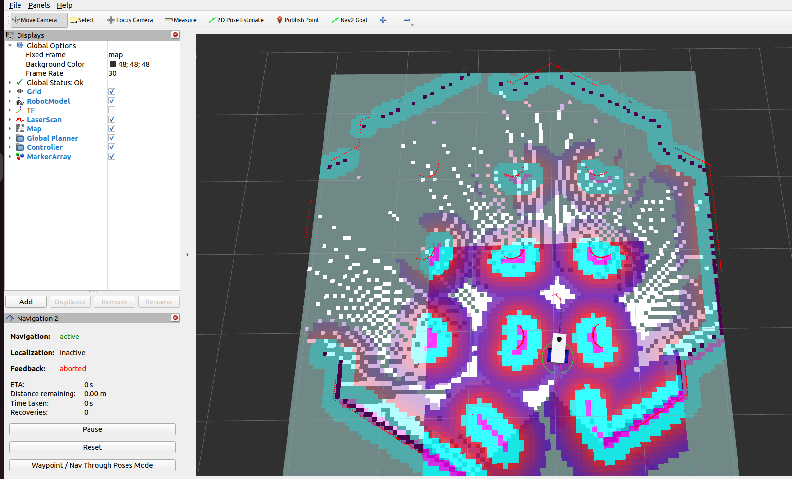
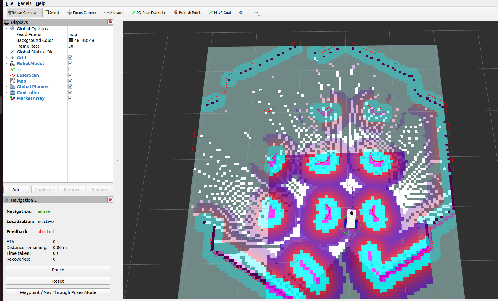

Using a Custom Behaviour Tree
Using the existing gz_example_robot_description.zip simulation, it is possible to select the desired behaviour tree in the launch file.
Prep Work
Download the three necessary configuration .yaml files and add them to the bt_demos/config directory. These should be identical to the config files used in the previous path planning and navigation tutorials.
Download the example launch file bt_demo.launch.py, and place it in the bt_demos/launch directory.
In the code block below, it is highlighted the changes made to accept a new behaviour tree. We pass as an argument, the path to the .xml file we desire.
1from ament_index_python.packages import get_package_share_directory
2from launch import LaunchDescription
3from launch.actions import IncludeLaunchDescription
4from launch_ros.actions import SetParameter, Node
5from launch.launch_description_sources import PythonLaunchDescriptionSource
6from launch.substitutions import PathJoinSubstitution
7
8
9def generate_launch_description():
10 ld = LaunchDescription()
11
12 # Parameters, Nodes and Launch files go here
13
14 # Declare package directory
15 pkg_bt_demos = get_package_share_directory('bt_demos')
16
17 # Define nav_to_pose behaviour tree
18 bt_xml_navtopose_file = PathJoinSubstitution([pkg_bt_demos, 'behavior_tree_xml', 'bt_simple_nav.xml'])
19
20 # Necessary fixes
21 remappings = [('/tf', 'tf'), ('/tf_static', 'tf_static')]
22
23 lifecycle_nodes = [
24 'controller_server',
25 'planner_server',
26 'behaviour_server',
27 'bt_navigator',
28 ]
29
30 # LOAD PARAMETERS FROM YAML FILES
31 config_bt_nav = PathJoinSubstitution([pkg_bt_demos, 'config', 'bt_nav.yaml'])
32 config_planner = PathJoinSubstitution([pkg_bt_demos, 'config', 'planner.yaml'])
33 config_controller = PathJoinSubstitution([pkg_bt_demos, 'config', 'controller.yaml'])
34
35 # Include Gazebo Simulation
36 launch_gazebo = IncludeLaunchDescription(
37 PythonLaunchDescriptionSource([get_package_share_directory('gz_example_robot_description'), '/launch', '/sim_robot.launch.py']),
38 launch_arguments={}.items(),
39 )
40
41 # Include SLAM Toolbox standard launch file
42 launch_slamtoolbox = IncludeLaunchDescription(
43 PythonLaunchDescriptionSource([get_package_share_directory('slam_toolbox'), '/launch', '/online_async_launch.py']),
44 launch_arguments={}.items(),
45 )
46
47 # Behaviour Tree Navigator
48 node_bt_nav = Node(
49 package='nav2_bt_navigator',
50 executable='bt_navigator',
51 name='bt_navigator',
52 output='screen',
53 parameters=[config_bt_nav,{'default_nav_to_pose_bt_xml' : bt_xml_navtopose_file}],
54 remappings=remappings,
55 )
56
57 # Behaviour Tree Server
58 node_behaviour = Node(
59 package='nav2_behaviors',
60 executable='behavior_server',
61 name='behaviour_server',
62 output='screen',
63 parameters=[config_bt_nav],
64 remappings=remappings,
65 )
66
67 # Planner Server Node
68 node_planner = Node(
69 package='nav2_planner',
70 executable='planner_server',
71 name='planner_server',
72 output='screen',
73 parameters=[config_planner],
74 remappings=remappings,
75 )
76
77 # Controller Server Node
78 node_controller = Node(
79 package='nav2_controller',
80 executable='controller_server',
81 name='controller_server',
82 output='screen',
83 parameters=[config_controller],
84 remappings=remappings,
85 )
86
87 # Lifecycle Node Manager to automatically start lifecycles nodes (from list)
88 node_lifecycle_manager = Node(
89 package='nav2_lifecycle_manager',
90 executable='lifecycle_manager',
91 name='lifecycle_manager_navigation',
92 output='screen',
93 parameters=[{'autostart': True}, {'node_names': lifecycle_nodes}],
94 )
95
96
97 # Add actions to LaunchDescription
98 ld.add_action(SetParameter(name='use_sim_time', value=True))
99 ld.add_action(launch_gazebo)
100 ld.add_action(launch_slamtoolbox)
101 ld.add_action(node_bt_nav)
102 ld.add_action(node_behaviour)
103 ld.add_action(node_planner)
104 ld.add_action(node_controller)
105 ld.add_action(node_lifecycle_manager)
106
107 return ld
Note
There are two behaviour trees available to the Nav2 Navigation Stack, nav_to_pose and nav_through_poses. The former accepts only a single goal, the latter accepts a list of goals. So far, we have only been interested in the single goal nav_to_pose behaviour tree.
Run The Launch File
Navigate to the workspace you are working in and build and source as usual. Then run our new launch file.
cd ~/MY_ROS_WS
colcon build
source install/setup.bash
ros2 launch bt_demos bt_demo.launch.py
The launch file will start a simulation world, with a robot, as well as RVIZ and the navigation stack.
Send A Goal Command
Using the Nav2 Goal functionality in RVIZ, set a goal ahead of the robot. It should start traversing to the goal pose!
 

{kind=link}
There are some characteristics which are not great about this behaviour tree. If the robot has completed a navigation task, then when given a new goal, it will continue to compute a path and navigate to the goal. If the goal is given during navigation however, then the behaviour tree (and the robot) ignore it entirely. During the next step, we will add replanning to the behaviour tree.